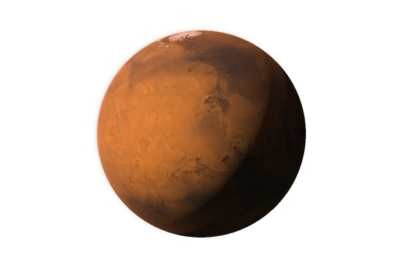
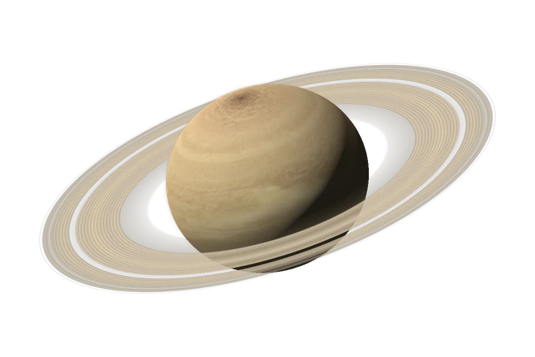
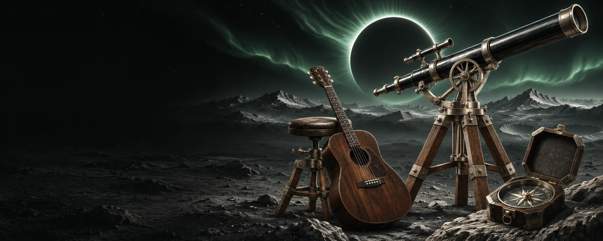

Earth
Look for the oceans between the continents. Together they cover about 71% of Earth’s surface.
Interactive star atlas
Travel from a spiral galaxy to four worlds in our Solar System. Select a planet, turn the globe and read its field notes.
Planetary science
Look for the oceans between the continents. Together they cover about 71% of Earth’s surface.

Valles Marineris cuts across the crust for about 3,870 kilometres. From orbit, the canyon system looks like a long scar.

Dark belts and bright zones wrap around Jupiter. Neighbouring bands of clouds can move in opposite directions.

Look between the bright A and B rings. The Cassini Division separates them across a gap roughly 4,700 kilometres wide.

Follow light through a telescope, pluck a guitar string or steer by a compass. Beyond the studio, fly to Saturn’s rings and descend into a lunar crater.
The spiral galaxy is an artist’s illustration. The flight compresses distances and planet sizes so you can compare four selected worlds. The planet placements show an illustrative arrangement.
Adapted globe imagery from NASA Goddard’s Blue Marble, by Reto Stöckli and Robert Simmon, NASA/JPL-Caltech/USGS for Mars and NASA/JPL/Space Science Institute for Jupiter. Saturn uses Don Davis’s cloud illustration for JPL/Caltech and modeled rings.
Visit the instrument gallery